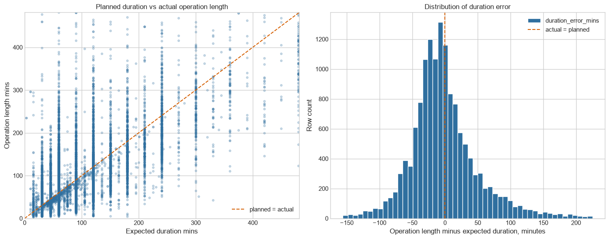
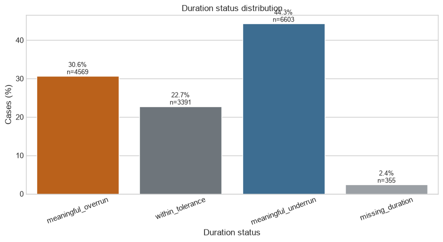
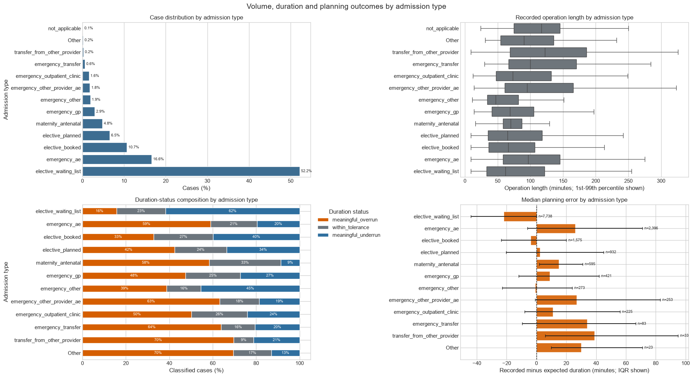
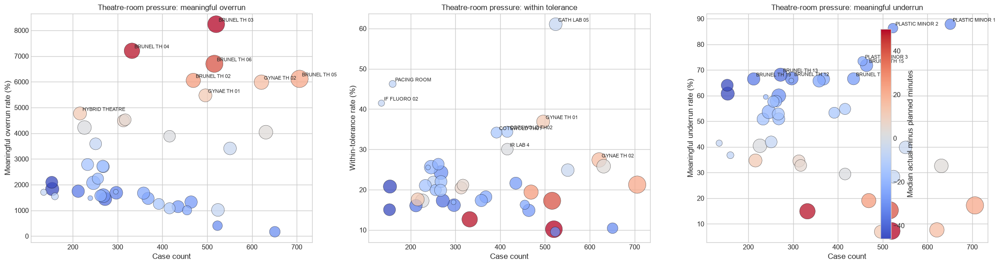
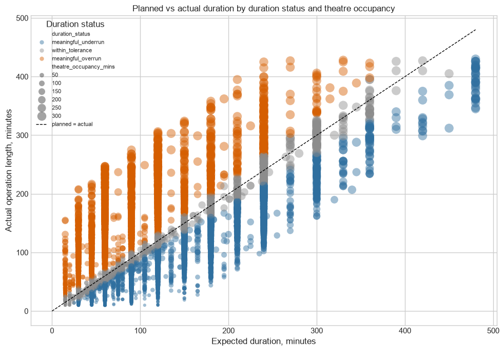
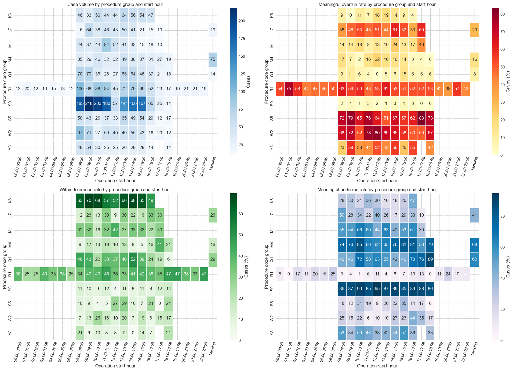
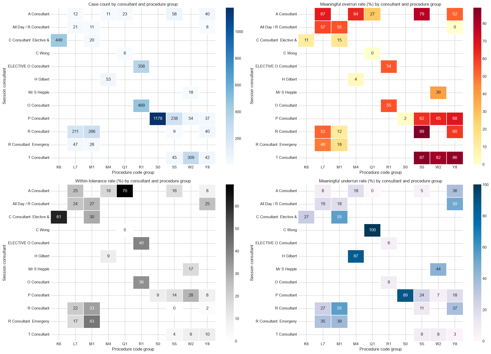
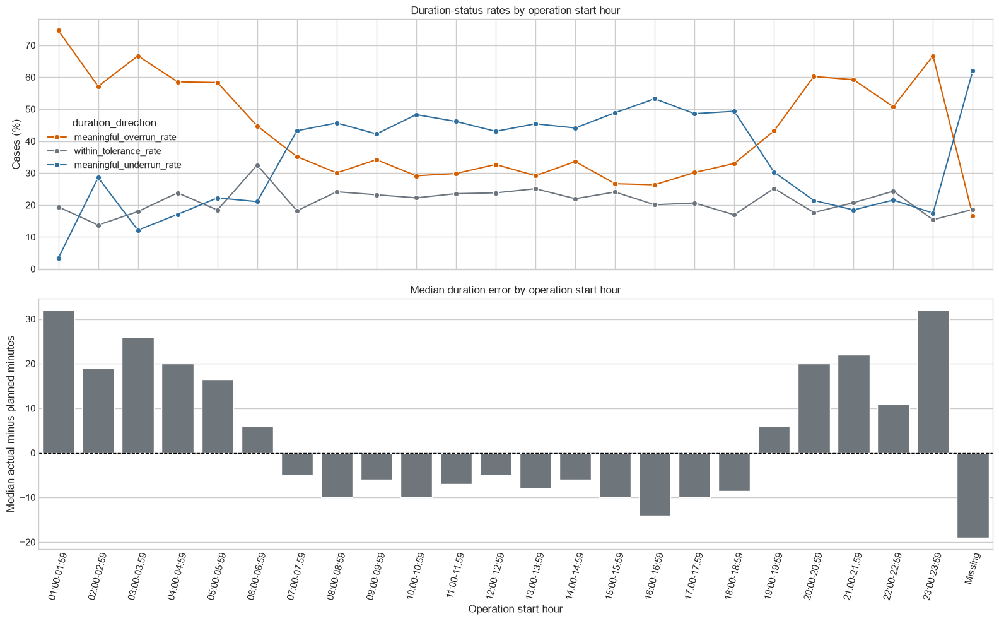
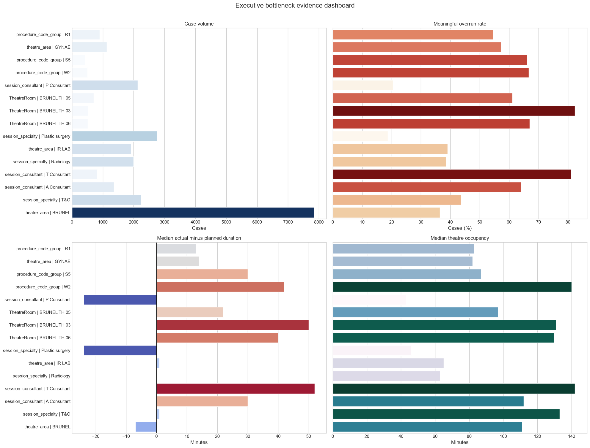

Planned vs actual duration
Section 10.4
Shows planned minutes vs real operation minutes. Wide spread around the line proves planning is not exact for each case.

Click a title or image to open the figure directly. These images come from nbt_smallset_preprocessing.ipynb. The notebook sections are shown so you can mention them in your presentation.
Section 10.4
Shows planned minutes vs real operation minutes. Wide spread around the line proves planning is not exact for each case.

Section 10.4.1
Shows how many cases are meaningful overrun, within tolerance, or meaningful underrun.

Section 10.5.4
Shows that pathways/categories have different operation length, overrun, underrun, and median error patterns.

Section 10.8.1
Shows which rooms have higher volume, overrun rate, underrun rate, and median error. It is not a room-performance ranking.

Section 10.11.4
Shows overrun and underrun patterns together with expected duration, recorded duration, and occupancy.

Section 10.11.7
Shows procedure groups with different workload and scheduling outcomes.

Section 10.11.7
Shows whether procedure-group overrun patterns change by start-hour band.

Section 10.11.8
Shows higher overrun pressure in some hours and more underrun in others. Start hour is provisional.

Section 10.14.1
Combines volume, overrun rate, total overrun minutes, median error, and occupancy for prioritisation.
